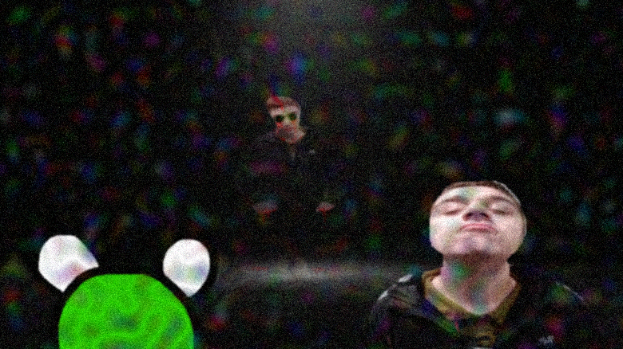
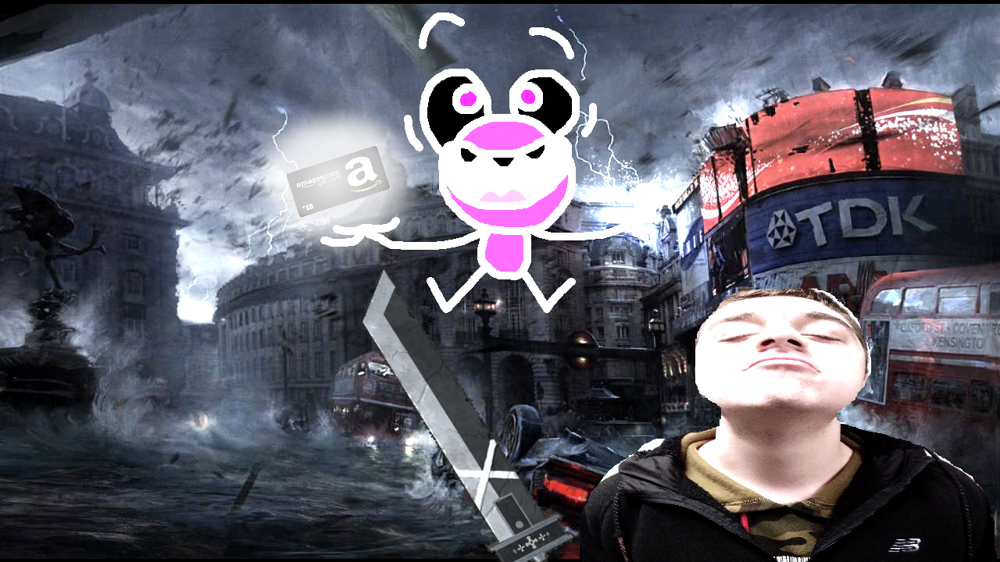

Page 9
Nadeem and Kervin then stood somewhere horrific. In this dimension there was another Nadeem. Kervin was nervous as he knew they could double-team him. This Nadeem could see the two in plain sight, but he just stood still and looked. He didn’t look right.. almost bloodthirsty in appearance. Kervin lept for the remote while the real Nadeem stood there in a state of fear. Nadeem was seeing himself and he didn’t like it. It was like a husk of his being; someone who looked like him but acted nothing like him. It was terrifying. Kervin scrambled to press the button but his hands had gotten sweaty and he kept dropping the remote. At the last second as Kervin pressed the button he saw the other Nadeem charging towards them with a glint of evil in his eye. And then he was gone.
Finally as the duo fell through the wormhole they ended up back at Nadeem’s house. What was just moments ago an eerie silence was replaced with the sounds of the breezes in the air and the whir of electricity in Nadeem’s lights. Nadeem’s devices were still activated even though Nadeem’s power should have been out. That wormhole must have been powerful. Kervin was the opportunity of Nadeem’s distraction and jumped at him. Kervin pinned Nadeem to the ground and grabbed the 15$ Amazon gift card.
Nadeem was doomed, and he didn’t even know it. What was Kervin’s obsession with this gift card? Did he want it to pay for the loss of his credit card? If so, it didn’t even nearly amount to Kervin’s loss in money. Kervin clenched the gift card and absorbed its power. He grew to double his size and gained an aura similar to that of Goku. Kervin fought valiantly. Nadeem took every blow like a champion. He may have been out of shape but it was like he had trained his whole life for this moment. Finally though, Nadeem was knocked to the floor. Nothing could match the power of the Amazon gift card. Nadeem had to think of something.